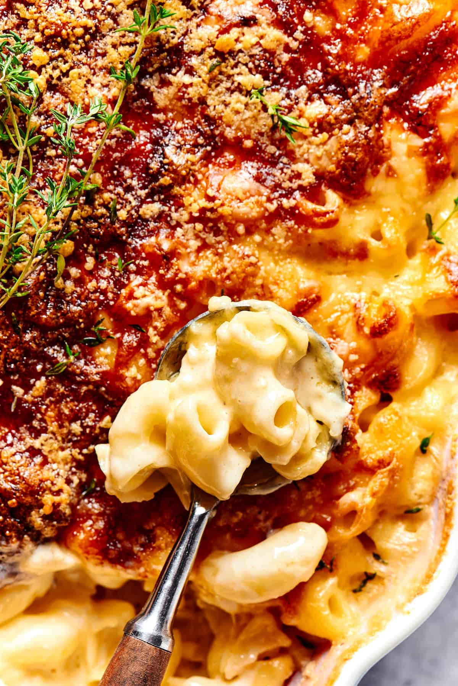

Go Back
Mac & Cheese

Mac & cheese is a classic comfort dish that started as a simple combination of pasta and cheese sauce.
Over time, many cultures and cooking styles have created their own unique versions with different cheeses, spices, toppings, and mix-ins.
You can experiment however you like with flavors and techniques to make it your own. The following recipe is a great base that you can build off of with your own style!
Ingredients
- Elbow macaroni
- Butter and milk
- Cheddar cheese
- Salt and pepper
- Garlic powder or paprika for extra flavor
- Option add-ins like bacon, breadcrumbs, and more
Steps
- Cook the Paste Boil your pasta until tender, then drain and set aside
- Make the Sauce Melt butter in a pot, add milk, and stir until warm and smooth
- Add the Cheese Mix in your shredded cheese slowly until it melts into a creamy sauce
- Season it Up Add salt, pepper, and any extra spices like carlic pwder or paprika
- Combine Everything Stir the cooked pasta into the cheese sauce until every piece is coated
- Finish Strong Top with breadcrumbs, bacon, or extra cheese if you want, then serve warm and enjoy